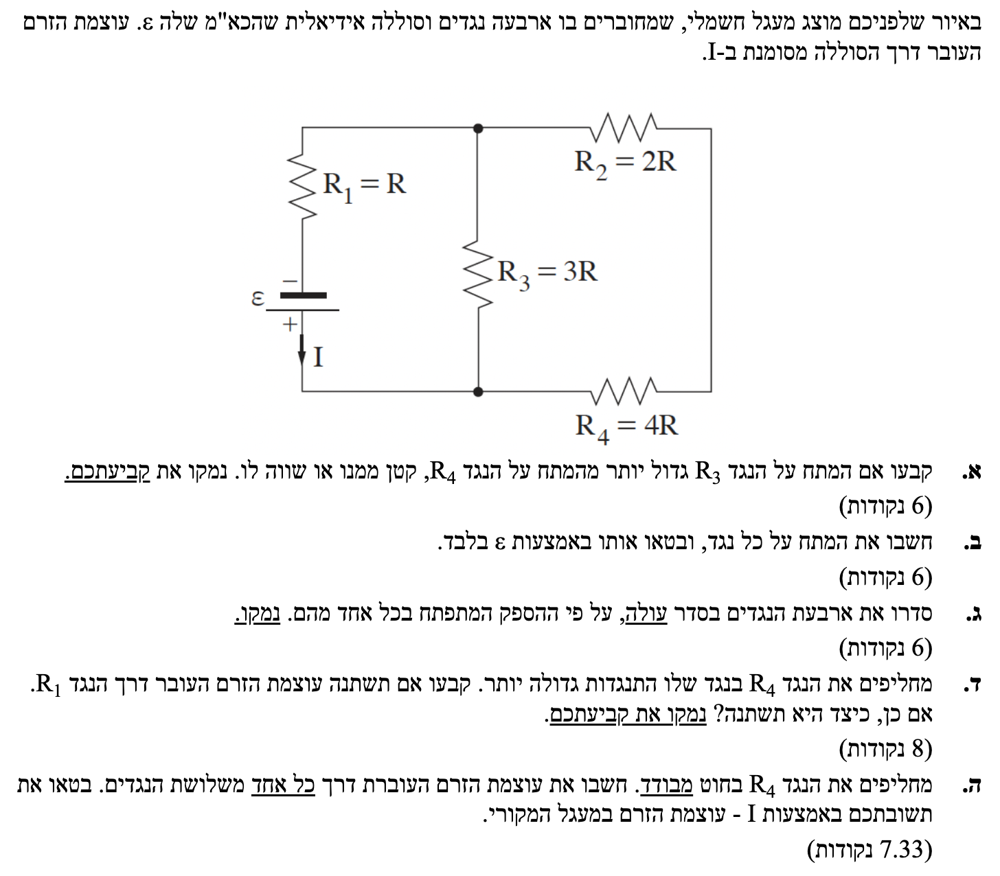

פתרון מודרך, צעד-אחר-צעד, הכולל ניתוח טופולוגי

לפני שניגש לסעיפים, הדבר החשוב ביותר בחשמל הוא להבין כיצד הרכיבים מחוברים. בואו נעקוב אחר מסלול הזרם היוצא מהסוללה (מההדק החיובי למטה) ונסרטט לעצמנו מעגל שקול וברור יותר.
תרשים שקול המפשט את הראייה: R₁ בטור למקביל של (R₃) ו-(R₂ + R₄)
עקרון חיבור מתחים בטור: המתח הכולל על ענף שווה לסכום המתחים על הרכיבים שבו (\(V_{branch} = \Sigma V_i\)).
עקרון מתחים במקביל: המתח בין שני צמתים המחוברים במקביל הוא זהה לכל הענפים המקבילים.
כפי שהסברנו בניתוח הטופולוגי, הנגד \(R_3\) מחובר במקביל לענף הימני המורכב מהנגדים \(R_2\) ו- \(R_4\) אשר מחוברים ביניהם בטור.
מכיוון שהם במקביל, המתח על הענף האמצעי (שבו נמצא רק \(R_3\)) שווה למתח הכולל על הענף הימני:
נפרק את המתחים למרכיביהם:
מכיוון שהזרם בענף הימני אינו אפס, גם המתח על הנגד השני חיובי (\(V_2 > 0\)). לכן, בהכרח מתקיים שסכום המתחים גדול מכל אחד ממרכיביו בנפרד:
מסקנה: המתח על הנגד R₃ גדול יותר מהמתח על הנגד R₄.
נחשב את ההתנגדות של הענף הימני (טור):
נחשב את ההתנגדות המקבילית של הענף האמצעי והימני:
ההתנגדות השקולה הכוללת היא חיבור בטור של החלק המקבילי עם \(R_1\):
נשתמש בנוסחת מתח הדקים \(V_{ab} = \varepsilon - rI\). מכיוון שהסוללה אידיאלית הרי ש- \(r = 0\), ולכן מתח ההדקים שווה לכא"מ: \(V_{ab} = \varepsilon\).
על פי חוק אוהם (\(V = RI\)), מתח ההדקים שווה למכפלת הזרם הראשי בהתנגדות השקולה. נשווה בין הביטויים ונבודד את הזרם:
הנגד \(R_1\) נמצא על הזרם הראשי, לכן:
כעת נמצא את המתח על החלק המקבילי (המתח בין הצומת העליון לצומת התחתון). הזרם הראשי של המעגל זורם אל תוך החלק המקבילי הזה, שהתנגדותו השקולה היא \(R_p = 2R\). נשתמש בחוק אוהם כדי לחשב את המתח הנופל עליו:
היות ו- \(R_3\) מחובר ישירות בין שני הצמתים של החלק המקבילי, המתח עליו זהה למתח על החלק המקבילי כולו:
כעת נמצא את המתחים בענף הימני. נחשב תחילה את הזרם בענף זה:
כעת נחשב את המתח על כל נגד בענף הימני לפי חוק אוהם:
נציב את חוק אוהם לנוסחת ההספק כדי לקבל ביטוי נוח יותר התלוי רק בנתונים שחישבנו.
נחשב את ההספק עבור כל אחד מהנגדים. כדי להקל על ההשוואה, נביא את כל הביטויים למכנה משותף של \(81R\).
כעת, מכיוון שהמכנה (\(81R\)) משותף וחיובי, נותר לנו להשוות רק את המקדמים במונה (המספר שמוכפל ב- \(\varepsilon^2\)):
2 < 4 < 9 < 12
ולכן הסדר (מהקטן לגדול) הוא:
מסקנה: סדר הנגדים (סדר עולה של הספק) הוא: \(R_2, R_4, R_1, R_3\).
עקרון מתמטי במעגלים: הגדלת התנגדות של רכיב בענף המחובר במקביל, גורמת להגדלת ההתנגדות השקולה של החלק המקבילי כולו, ובעקבות כך להגדלת ההתנגדות השקולה של המעגל כולו.
ננתח את שרשרת ההשפעות:
מסקנה: כן, הזרם דרך R₁ ישתנה. עצמת הזרם תקטן.
עקרון נתק במעגל (Open Circuit): כאשר קיים נתק או חומר מבודד בענף, ההתנגדות של הענף שואפת לאינסוף, ולכן לא זורם בו זרם כלל.
כאשר מחליפים את הנגד \(R_4\) בחוט מבודד, אנו למעשה יוצרים "נתק" בענף הימני. התנגדות הענף הימני הופכת לאינסופית, ולכן הזרם לא יזרום דרכו כלל. מכאן נובע מידית כי הזרם דרך \(R_2\) הוא אפס:
מכיוון שהענף הימני מנותק, הזרם היוצא מהסוללה יכול לזרום רק במסלול אחד: דרך \(R_3\) ולאחר מכן דרך \(R_1\). כלומר, הנגדים \(R_1\) ו- \(R_3\) מחוברים כעת בטור זה לזה. נחשב את ההתנגדות השקולה החדשה של המעגל:
נחשב את הזרם הכולל החדש במעגל (אשר זורם דרך שני הנגדים הנותרים):
נציב את הביטוי שהכנו מראש \(\varepsilon = 3RI\) כדי לבטא את הזרם החדש באמצעות הזרם המקורי \(I\):